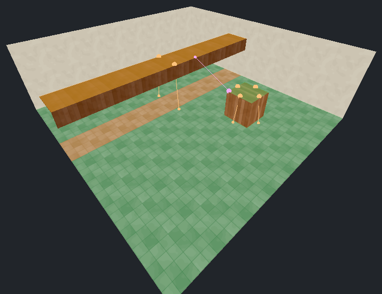

Ground
Ground comes from three places:
- Room floors. The floor of each room, with doorways already cut out.
- Tops of detail brushwork. A crate, a table, a ledge, a bridge. Detail solid brushes and the solid brushes of brush entities count. Structural solid does not.
- Tops of marked props. See Props.
Only surfaces with air above them count. Ground steeper than 46° is a wall.
What is measured
Each patch of ground carries its measurements. Your game's agent profiles are compared against them.
| Measurement | What it is |
|---|---|
| Headroom | free height above the patch, up to the ceiling or whatever hangs over it |
| Width | how wide a body can stand there: the width of the floor the patch is part of, which goes on through doorways and up stairs |
| Slope | how steep it is |
| Water depth | how deep the water over it is |
| Travel cost | what crossing it costs; see Travel cost |
The ground is cut wherever headroom or water depth changes, so each patch has one value. A low beam over part of a hall makes a strip of low headroom under the beam only.
Things in the way
Detail brushwork that stands on the floor takes the ground under it. Its top becomes ground of its own.
Detail brushwork that hangs above the floor takes nothing. It lowers the headroom beneath it. A chandelier does not put a hole in the floor.
Note: Footprints are bounding boxes. A crate turned 45° blocks the square around it, not just the crate. This errs towards keeping agents clear.
A body's width from the walls
An agent's route keeps half its width from every wall, ledge and thing standing in the way, and goes round a corner rather than through it. So:
- An opening narrower than the agent is not a way through, however much floor there is either side.
- Two rooms that meet only at a corner are not joined.
- A doorway joins the rooms either side of it, a body's width narrower than it is built.
Where agents of different widths share ground, it is kept clear for the narrowest of them.
The Navigation tool's fill shows the ground as measured, up to the walls. The route test walks it drawn back.
Headroom and crouching
An agent that fits upright walks. An agent that fits only crouched crawls, at extra cost, if its profile can crouch. Ground lower than that, narrower than the agent, or steeper than it can manage is left out for that agent.
The Navigation tool colours each patch for one chosen agent: open, crouch only, or unusable.
Water
Water depth is measured from the ground to the top of the water fill above it. The water surface is not a ceiling: headroom over a pool is the room's.
- Shallow water is waded, at extra cost.
- Deeper water is swum, at more cost, by agents whose profile can swim. For the rest it is a wall.
Where wading ends and swimming starts is a share of each agent's height, set in its profile. Dropping into and climbing out of water: see Links.
Props
A prop is a model. Nothing in a model says whether it is a table, a statue or a banner, so each prop that matters is marked with a nav_role property.
nav_role |
Effect |
|---|---|
obstacle |
Takes the ground it stands on and lowers the headroom above it. A statue, a pillar. |
walkable_top |
Its top is ground. A platform, a bridge. |
both |
Both. A crate you can climb onto. |
ignore |
Ignored by navigation. The default, and right for most dressing. |
Footprint and top come from the prop's bounding box.
Every build reports how many props have no nav_role, as a warning. Mark the ones that matter; the rest can stay unmarked.
The field is on prop_model whenever this addon is installed — navigation puts it there itself, so core does not have to know navigation exists. A game with prop types of its own adds it the same way, with extend_point_entity_type.
Travel cost
Select a structural air brush. The inspector shows a Navigation section.
| Property | What it does | Default |
|---|---|---|
| Travel cost | What crossing this room costs, as a multiple of the distance. 2 means an agent would rather walk twice as far elsewhere. From 0.1 to 8. | 1 |
Raise it for rubble, mud, or anywhere agents should go round. Lower it for a road they should follow. It multiplies what the agent's profile already charges for water or crouching.
Every air brush of one room shares the value.
